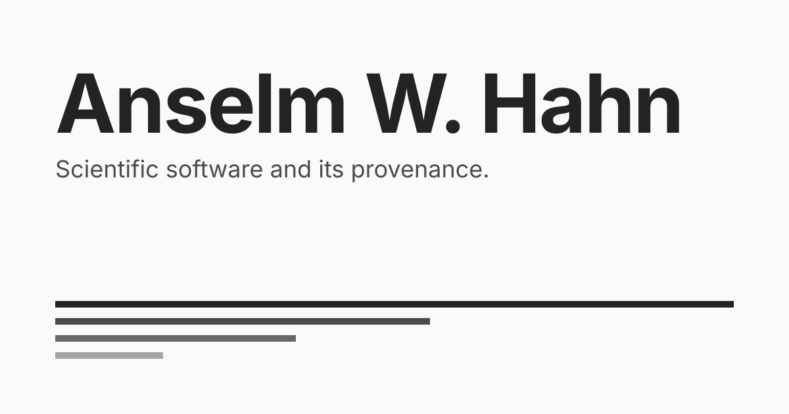

The scale is not chosen: the OG image is the portfolio page's own sheet, twice, so every value on it is already in the token file. The motif is the same on every variant — it is a reading of the system, which is what all the variants share. A per-project reading would need a per-project measurement, and monthly downloads are not comparable across npm, PyPI and a marketplace.
Actual size in the narrowest feed. A card renders about 504px wide on X, 552 on LinkedIn and 360 in Slack. At 360 the name lands at 37.2px and the role line at 10.8px — the name is what has to survive, the role line is for the reader who already stopped.
One file, not two. The image brings its own paper, so the feed's band never touches it and there is no dark variant. The icon set answered the same question the other way, and for a good reason: an icon is transparent and inherits its ground.
Not delivered: the PNG. Feeds take png and jpg, not svg. Rasterising needs a headless browser or a library and this repository installs neither, so assets/og/og-lab.html renders these at full size and the export is one browser away. Whatever rasterises them needs Inter, which the repo self-hosts.